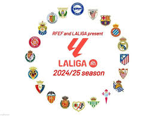

La liga was founded in spain in 1929 and started off 10 teams, but in 1987 the amount of teams reached 20, then from a shout period of yime between 1995 and 1997 la liga had 22 teams until i got reduced back to 20 teams which is still present till this day.

La liga works on a relgation format were the bottem 3 temas(20-18) get sent back to secound league of the spanish leagues, and the top 3 of the secound league in spanish football get promoted to the first league/La Liga.